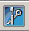

This describes how to start the Local Maintenance Terminal and connect it to the BSC.
Prerequisites
- The LMT runs normally.
- The communication between the LMT and the BSC is normal.
Context
If you start Local Maintenance Terminal only, you can start multiple Local Maintenance Terminals at the same time to log in to one BSC6000 as follows:
- If the M2000 is connected, you can start 65 Local Maintenance Terminals at the same time to log in to one BSC6000.
- If the M2000 is not connected, you can start 68 Local Maintenance Terminals at the same time to log in to one BSC6000.
Procedure
- Use one of the following three methods to start the BSC6000 Local Maintenance Terminal.
- Choose . A dialog box is displayed, as shown in Figure 1.
- On BSC6000 Local Maintenance Terminal, choose .
- On BSC6000 Local Maintenance Terminal, click the icon  to start the Local Maintenance Terminal.
 NOTE:
NOTE: The latter two methods are not displayed on the log-in dialog box.
- Click
 to Setting the Office Information.
to Setting the Office Information. - Click Login to start the Local Maintenance Terminal.